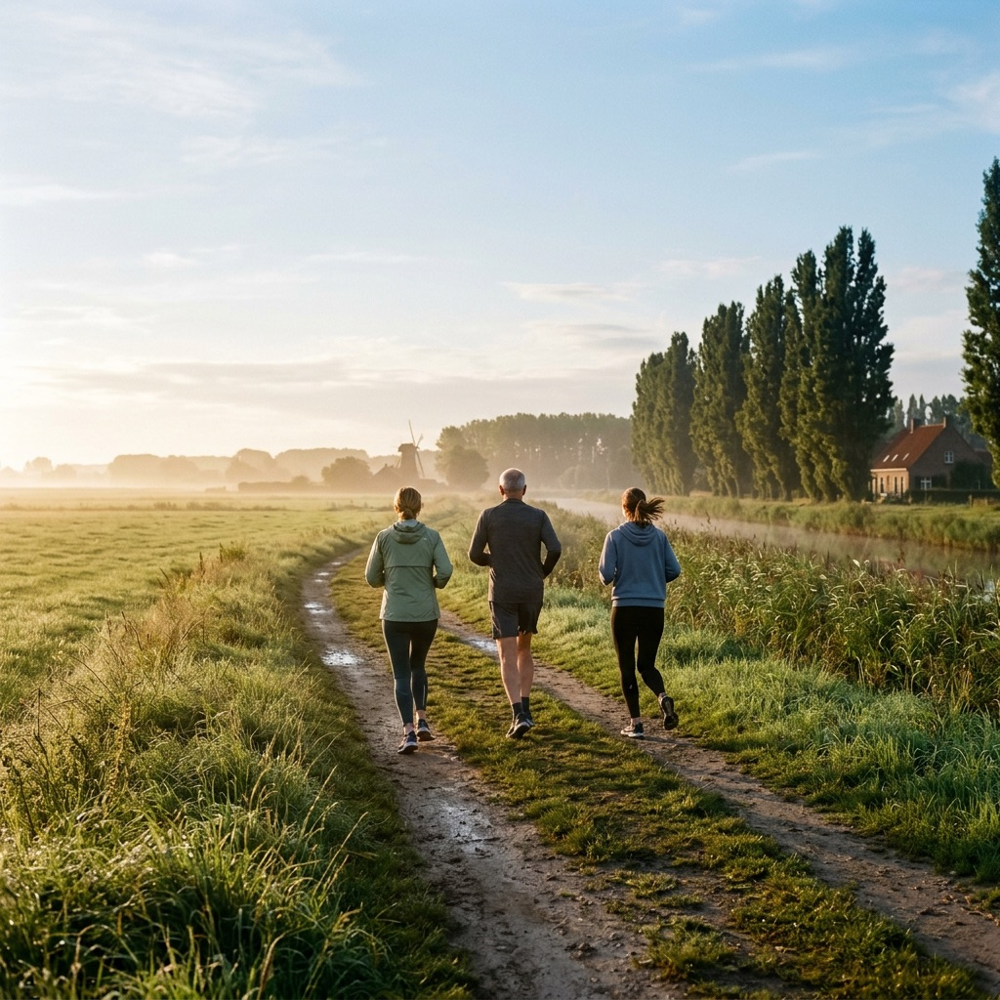

i.
Jouw lichaam
De basis van uw vitaliteit
- Luisteren naar fysieke signalen.
- Behandelen van acute en chronische klachten.
- Focus op gezonde voeding en beweging.
- Preventie om uw lichaam sterk te houden.
- Onze aandacht gaat ook naar mensen met kanker, burn-out, depressie…
Een belangrijk gezondheidsvoordeel kan worden gerealiseerd door vastenkuren: intermittent fasting, Mayrkuren…